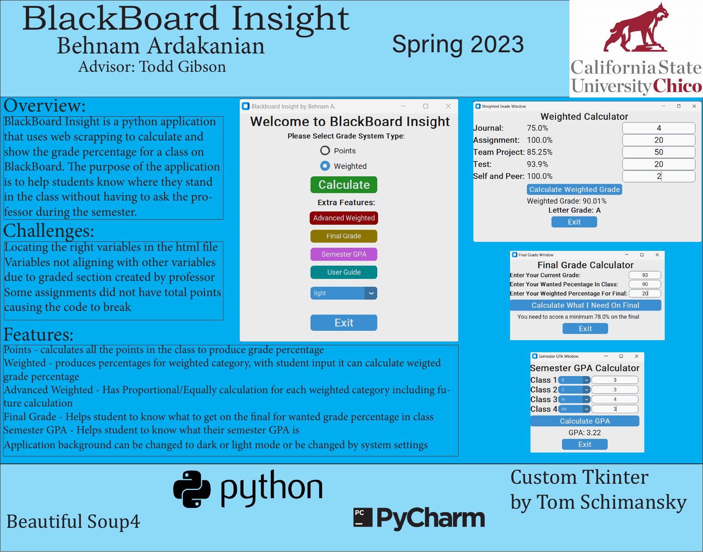
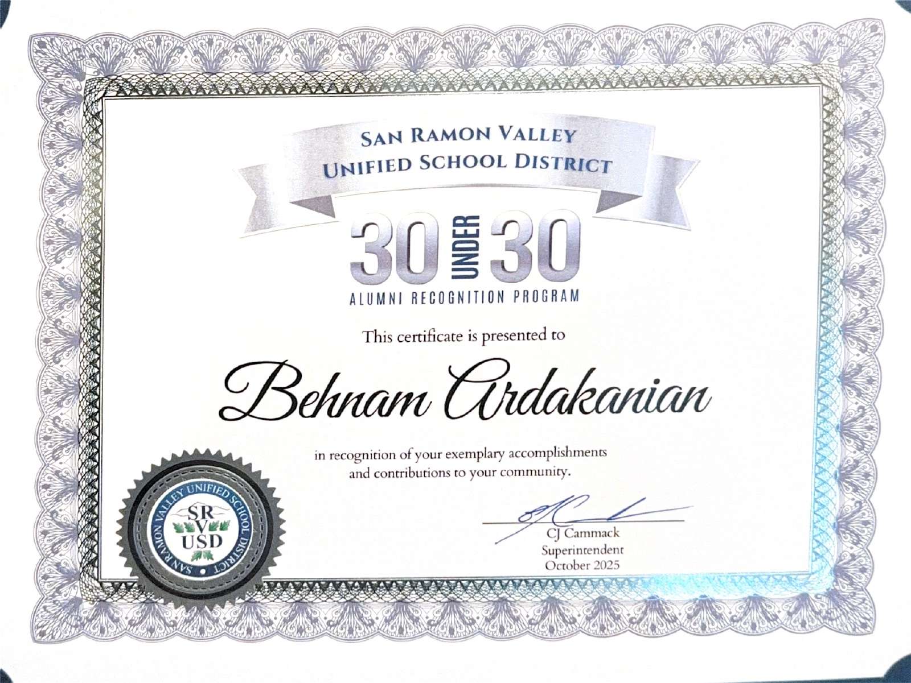

2 years
Enterprise cloud support
Supported enterprise AWS customers by diagnosing complex service issues, coordinating cross-functional response, and communicating clear paths to resolution.
Behnam Ardakanian
MBA Candidate · Cloud & AI · Customer Experience
I combine technical expertise with business judgment to translate complex customer needs into practical solutions and align teams around clear outcomes.
About
I am an MBA candidate and Computer Information Systems graduate with experience supporting enterprise customers at Amazon Web Services. I specialize in translating technical complexity into clear operational priorities, stakeholder alignment, and actionable decisions.
Today, I use AI-assisted development and prompt-driven workflows to design tools that improve administrative efficiency and accessibility for non-technical users. My approach combines structured problem-solving, thoughtful communication, and disciplined execution.
2 years
Supported enterprise AWS customers by diagnosing complex service issues, coordinating cross-functional response, and communicating clear paths to resolution.
2,500+
Represented more than 2,500 students across six ECC departments and advanced data-informed recommendations related to technology, resources, and the student experience.
1st
Advised City of San Ramon leaders on young-adult engagement, contributing to the launch of the city's first centralized online resource hub for residents ages 18–25.
View the City resource pageFeatured project
Python desktop application
Designed and developed a cross-platform desktop application that organizes local media by capture date and resurfaces photos and videos from the same calendar day across prior years.
View project on GitHubProduct thinking
Built the experience around local processing: media indexing, thumbnail generation, and preferences remain on the user’s device, with no accounts, analytics, advertising, or cloud uploads.
Build approach
Directed product requirements, prompt design, testing, and iteration through an AI-assisted development workflow. Validated the Python application on Windows and macOS while refining metadata handling, caching, and interface responsiveness.
Academic capstone · Spring 2023
Developed a Python application that used web scraping to calculate course grades and help students understand their academic standing. The application supported points-based and weighted grading, final-grade planning, semester GPA calculations, and light or dark display modes.
View full poster
Experience
Design and implement lightweight AI-assisted tools that streamline learning-management workflows, improve documentation for non-technical users, and increase administrative efficiency.
Supported enterprise AWS customers by diagnosing service issues, coordinating with engineering teams, and advising on reliable, maintainable configurations.
Resolved technical support requests across core AWS services and documented repeatable solutions to improve team response efficiency and knowledge sharing.
Leadership
Campus · 2025–Present
Support budgeting and expense administration for the Graduate Business Association and coordinate graduate-student outreach and events through the Council of Graduate Students.
Community · 2023–2024
Collaborated with City of San Ramon leaders to identify engagement gaps for residents ages 18–25 and develop recommendations for a centralized online resource hub.
Campus · 2021–2022
Represented more than 2,500 students across all six ECC departments, partnering with deans and university committees to advance data-informed recommendations on technology, resource allocation, and student needs.
Open video in Google DriveFeatured video
A brief profile of my service as student senator for the College of Engineering, Computer Science, and Construction Management, representing more than 2,500 students across six academic departments.
Education, credentials & recognition
Master of Business Administration
California State University, Chico · AACSB Accredited
B.S., Computer Information Systems
Minor in Business Administration · CSU Chico
Google AI Professional Certificate
Google Career Certificates · Coursera
View Credential
IT Support Professional - Certificate of Achievement, Highest Honors
Las Positas College
View Credential
AWS Certified Cloud Practitioner
Amazon Web Services Training and Certification
View Credential
30 Under 30 Alumni Recognition Program
San Ramon Valley Unified School District
Recognized for exemplary accomplishments and contributions to the community.
View Award

Let’s connect
I welcome conversations about roles and initiatives that connect technology, business strategy, and customer outcomes.
Connect on LinkedIn